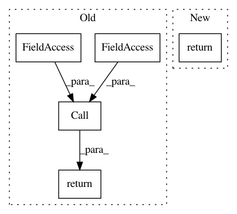

6ae439c8c58dd0118d2f2c5d1c4bcb650df47104,python/tvm/te/hybrid/parser.py,HybridParser,visit_Subscript,#HybridParser#Any#,382
Before Change
arr = arr[i.value]
return arr
if isinstance(node.ctx, ast.Load):
return tvm.tir.Call(arr.dtype, arr.name, args,
_expr.Call.Halide, arr.op, arr.value_index)
return arr, args
def visit_With(self, node):
if sys.version_info[0] < 3:
After Change
arr = arr[i.value]
return arr
if isinstance(node.ctx, ast.Load):
return tvm.tir.ProducerLoad(arr, args)
return arr, args
def visit_With(self, node):
if sys.version_info[0] < 3:
In pattern: SUPERPATTERN
Frequency: 3
Non-data size: 5
Instances
Project Name: apache/incubator-tvm
Commit Name: 6ae439c8c58dd0118d2f2c5d1c4bcb650df47104
Time: 2020-06-07
Author: tqchen@users.noreply.github.com
File Name: python/tvm/te/hybrid/parser.py
Class Name: HybridParser
Method Name: visit_Subscript
Project Name: apache/incubator-tvm
Commit Name: 6ae439c8c58dd0118d2f2c5d1c4bcb650df47104
Time: 2020-06-07
Author: tqchen@users.noreply.github.com
File Name: python/tvm/te/tensor.py
Class Name: Tensor
Method Name: __call__
Project Name: apache/incubator-tvm
Commit Name: 82d157f0b83ae17fde7bbfca14110aa2f2b80b61
Time: 2020-06-22
Author: tqchen@users.noreply.github.com
File Name: python/tvm/tir/expr.py
Class Name: ExprOp
Method Name: __invert__